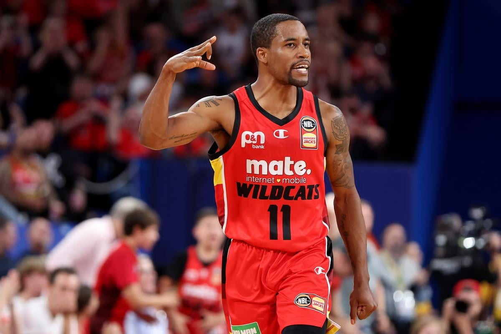

დაარსებული 1937 წელს, პროფესიონალური
საკალათბურთო ლიგა
.
ლიგის ისტორია
.
ადრეული წლები

NBL დაიწყო 13 დამოუკედებელი გუნდით 1937 წელს. ლიგამ დაიწყო, როგორც შუა-დასავლეთ საკალათბურთო
კონფერენცია 1935 წელს, მაგრამ სახელი 1937 წელს შეიცვალა, რადგან ცდილობდა დიდი აუდიენცია მოეზიდა.
ლიგა შეიქმნა სამი კორპორაციის მიერ: გენერალ ელექტრიკი, ფაირტოუნი და გუდიეარის მიერ. ლიგა არსებობდა 12 წელიწადი,
ოლო 1949 წელს შეიერთა 3 წლის ისტორიის მქონე BAA, რასაც საბოლოო შედეგი ის მოჰყვა,
რომ ლიგების გაერთიანებამ ახალი სახელისკენ მოუწოდა და მოგვევლინა როგორც NBA.
შუა პერიოდი
ფორტ-უეინი ზოლნერ პისტონსი იყო ზედმეტსახელი მისი მფლობელ ფრედ
ზოლნერის გამო, რომლის კომპანიამაც შექმნა პისტონსი.
გუნდმა მეორე ადგილზე დაასრულა 1942 და 1943 წლები, ხოლო ლიგის ტიტული 1944 და 1945 წლებში მოიგო.
როგორც სხვა ბევრი გუნდს იმ დროს, ფორტ უეინი თამაშობდა სკოლის გიმნასტიკის დარბაზში
ზოლნერის დაქვემდებარების ქვეშ,
გუნდმა მნიშვნელოვანი როლი ითამაშა NBA ჩამოყალიბებაში და განვითარებაში.
ზოლნერის ფინანსური მხარდაჭერა, დაეხმარა NBA-ს დარჩენილიყო მოწოდების სიმაღლეზე მის პირველ წლებში.
ზოლნერ პისტონსის დიდი გამოწვევა იყო შებოიგენ რედ.
გვიანი წლები
NBL-ს მესამე ერას დომინირებდა 2.08 სმ სიმაღლის ჯორჯ მიკანი. როგორც ახალბედა,
მიკანი თამაშობდა ჩიკაგო ამერიკან გეარსის გუნდში, რომელსაც 1947 წელს ტიტულის მოპოვებაში დაეხმარა,
თუმცა შემდეგ სეზონში მიკანი გადავიდა მინეაპოლის ლეიკერსში, სადაც ჯიმ
პოლარდთან ერთად შეძლო 1948 წელს ჩემპიონობის მოპოვება.
1947-48 წლების სეზონის დასრულების შემდეგ, ჯორჯ მიკანის ლეიკერსი სხვა 3 NBL
გუნდთან ერთად გადავიდა BAA-ში (როჩესტერ როიალზი, ფორტ-უეინი პისტონსი და ინდიანაპოლის კაცკისი).
მომავალ სეზონში, რომელიც ანდერსონ დაფი პეკერსმა მოიგო, გახდა უკანასკნელი ლიგის გამაჯრვებული,
მის შემდეგ 6 გუნდი გადავიდა BAA.
დარეგისტრირდით და მიიღეთ უახლესი ამბები ჩვენი ლიგის შესახებ: